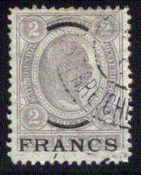

Return To Catalogue - Austria overview - Crete - Turkey
Note: on my website many of the
pictures can not be seen! They are of course present in the
catalogue;
contact me if you want to purchase the catalogue.
I've seen stamps of the Austrian
Post Offices in the Turkish Empire, used in Candia (Crete).
I've seen the following values:
10 sld blue (1867 issue)
10 pa on 5 h green (1900 issue)
5 c on 5 h green (value black on original stamp) 5 c on 5 h green (value green on original stamp) 10 c on 10 h red (value black on coloured background on original) 10 c on 10 h red (value black on white background on original) 10 c on 10 h red (value red on original) 15 c on violet 25 c on 25 h blue (value black on coloured background on original) 25 c on 25 h blue (value black on white background on original) 50 c on 50 h blue (value black on original stamp) 50 c on 50 h blue (value white on original stamp) Larger size:


1 F on 1 K red 2 F on 2 K violet 4 F on 4 K green
Value of the stamps |
|||
vc = very common c = common * = not so common ** = uncommon |
*** = very uncommon R = rare RR = very rare RRR = extremely rare |
||
| Value | Unused | Used | Remarks |
| 5 c on 5 h | * | * | value black |
| 5 c on 5 h | * | * | value green |
| 10 c on 10 h | * | * | value black on coloured background |
| 10 c on 10 h | * | * | value black on white background |
| 10 c on 10 h | * | * | value red |
| 15 c | * | ** | |
| 25 c on 25 h | R | R | value black on coloured background |
| 25 c on 25 h | * | *** | value black on white background |
| 50 c on 50 h | ** | *** | value black, 'CENTIMES' curved |
| 50 c on 50 h | * | *** | value white, 'CENTIMES' straight |
| 1 F on 1 K | *** | R | |
| 2 F on 2 K | *** | R | |
| 4 F on 4 K | *** | RR | |

A forged straight "CENTIMES" overprint made by the
forger Fournier as it can be found in 'The Fournier Album of
Philatelic Forgeries'.
Forged curved "CENTIMES" and "FRANC"
overprints as they can be found in 'The Fournier Album of
Philatelic Forgeries' (reduced sizes).

5 c green on yellow 10 c red 15 c brown on yellow 25 c blue on blue 50 c red on yellow 1 F brown on grey
These stamps are perforated 12 1/2.
Value of the stamps |
|||
vc = very common c = common * = not so common ** = uncommon |
*** = very uncommon R = rare RR = very rare RRR = extremely rare |
||
| Value | Unused | Used | Remarks |
| 5 c | c | c | |
| 10 c | * | * | |
| 15 c | * | * | |
| 25 c | * | * | |
| 50 c | ** | ** | |
| 1 F | *** | *** | |